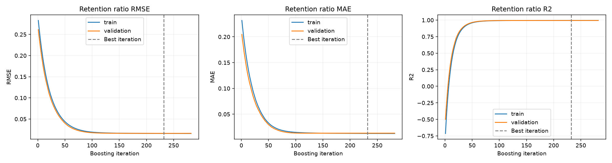

Independent NumPy/Pandas implementation. Ordered-prefix mode uses dyadic supporting models and shared tree structures; it is an approximation, not full CatBoost parity. Leaf fitting uses ordered encodings.
Training curves are resubstitution metrics, not unbiased generalization estimates. All preprocessing is fitted on training data only.
| mae | rmse | r2 | |
|---|---|---|---|
| retention_ratio | 0.0125 | 0.0160 | 0.9952 |
| price_myr | 31.1663 | 47.0823 | 0.9977 |
Boosting: ordered; permutations: 3 · Best validation price MAE: RM 36.30; best iteration: 232

Lower MAE/RMSE is better; higher R² is better. Ratio metrics and MYR price metrics use different units. Synthetic results do not establish real-market accuracy.
These checks measure whether predictions follow the expected direction and damage order.
| Passed | Checked | |
|---|---|---|
| backDmgScore | 276 | 280 |
| backDmgScore > frameDmgScore | 277 | 280 |
| deviceAge | 280 | 280 |
| frameDmgScore | 277 | 280 |
| internalPerfromanceOverallMark | 278 | 280 |
| screenDmgScore | 280 | 280 |
| screenDmgScore > backDmgScore | 280 | 280 |